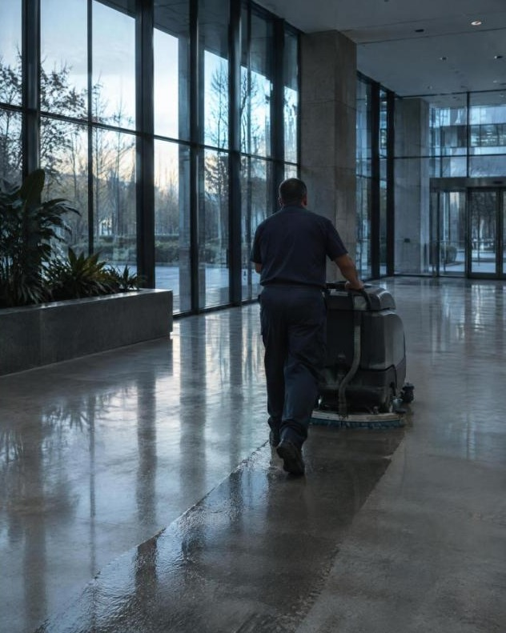

A multi-service contractor built for practical property outcomes
Western Sydney Facility Maintenance Pty Ltd delivers cleaning, hygiene, handyman and property maintenance across residential, commercial and industrial properties.
- Greater Sydney and South Coast
- Photo-documented jobs
- One point of contact

One team for cleaning, hygiene, handyman and maintenance
WSFM is an Australian cleaning, hygiene and property services contractor. We support residential customers, property managers, facility management companies, government contractors and commercial and industrial clients across Greater Sydney and the South Coast.
Our offer combines professional cleaning and hygiene services with practical handyman and property maintenance works. That means you can resolve a mixed scope, from a scheduled clean through to a board-up or large item removal, under one point of contact, with clear reporting.
WSFM also has practical experience delivering subcontracted cleaning, hygiene and maintenance scopes on government-related contracts, as a subcontractor to a Tier 1 contract holder.
- Coverage
- Metropolitan Sydney, extending south to the South Coast around Wollongong.
- Safety-led delivery
- WHS-driven site setup, SWMS and JSA, and an inducted workforce.
- Photographic reporting
- Before-and-after photos and a clear written scope on every job.
- Multi-service capability
- Cleaning, hygiene, handyman and maintenance under one contractor.
Who we support
The organisations responsible for Sydney properties.
- Social and community housing
- Vacant turnarounds, common areas and reactive maintenance.
- Facility management
- Support scopes across sites managed by FM providers.
- Property managers
- Residential portfolios, end-of-lease and preparation cleans.
- Government contractors
- Subcontracted delivery under head-contractor agreements.
- Residential portfolios
- Multi-property investors and residential managers.
- Commercial and industrial
- Cleaning, maintenance and external programs for commercial and industrial assets.
Safety-led delivery, documented at every step
Our processes are built around Work Health and Safety obligations, insured coverage, verified workers and clear photographic records for every job.
- WHS processes
- Documented Work Health and Safety procedures built into site setup.
- SWMS and JSA
- Site-specific Safe Work Method Statements and Job Safety Analyses.
- Worker inductions
- An inducted workforce with role-appropriate training records.
- Public liability
- Public liability insurance held covering site works.
- Workers compensation
- Workers compensation insurance in place for team members.
- Worker and subcontractor checks
- Workers and subcontractors verified before they attend site.
- White Cards and licences
- Construction White Cards and relevant task-specific licences.
- Incident reporting
- Formal incident and hazard reporting procedures.
- Photographic documentation
- Before-and-after photos as evidence of the works.
WSFM does not claim ISO, CM3, Avetta or other third-party certifications on this site unless specifically listed. Suspected asbestos is isolated and reported, and is not disturbed by WSFM unless appropriately licensed and authorised.
Work with a contractor that documents every job
Share the property details and we’ll come back with a clear, itemised price. Urgent jobs, call us directly.